Kerala On Road
An online Automobile portal based in Kerala offering various services related to Automobiles.
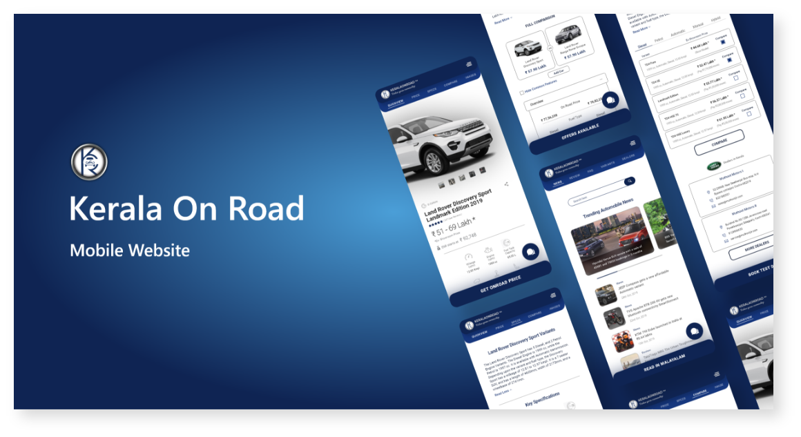
My Role
UX Designer Intern
Redesigning the Mobile website, creating prototypes, and converting the designs to markup code
Description
The venture 'Kerala On Road', by Premium Comtechs
Pvt.Ltd, was entrenched in 2014 with a noble vision of
bridging the gap between automobile sellers and buyers.
Initiated by a group of experts having all-embracing
experience in the concerned niche.
The platform is focused to conduct trade of new as well
as used cars and bikes, by providing most reliable and
accurate information about different vehicles thus helping
users in making the selection process judicious.
Equipping the owners and buyers with comprehensive
and unbiased information about the vehicles, by
showcasing expert reviews, owner reviews and detailed
specifications.
The main goal is to create an ultimate online solution
when it comes to the selling and purchasing of vehicles,
quickly and easily.
'Kerala On Road' had more than 60% of their user traffic
from mobile devices. But their mobile site had a pretty
low user-engagement in compared to their desktop site.
There was just too much data in one single place, and so
it was pretty hard for the user to find a particular thing,
which he/she came to look for.
Design Thinking
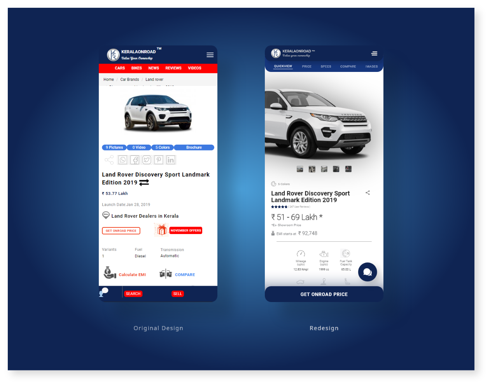
The idea was pretty simple and straight-forward. Users
were having a hard time to find a particular section
regarding a vehicle.
And so I simplified the page contents. Sorted them in the
order of their importance and wants of the user (From the
most important and most searched thing at the top, to
the least important one).
Increased the size of those elements which the user
wants to see first.
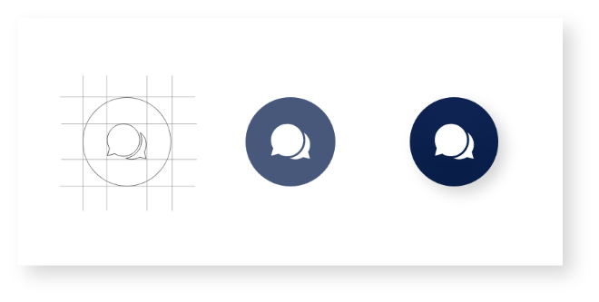
Created a floating action button, with a Chat option. So
that if the user still faces any problem in finding any of
the information related to the vehicle, there's always a
customer executive to assist and help them out.
So in this way we're not losing any of our users.
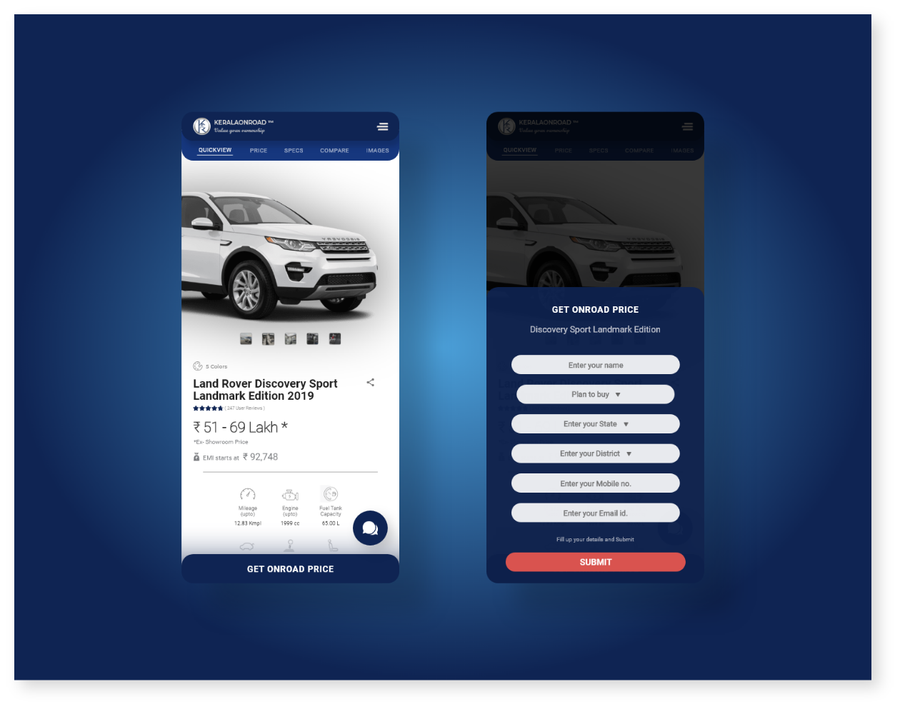
Created a dedicated CTA button, to catch the attention of
the users. Here, its the 'Get Onroad Price' button, whose
work is, not only just showing the on road price of the
vehicle according to the user's location, but also
maintaining the website's goal, i.e. bridging the gap
between the buyers and the sellers.
Quickview Page
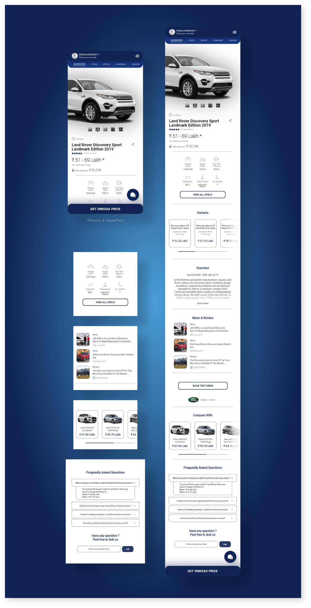
Added all the information related to the vehicle, in one single page, in a short simplified way.
Used graphical assets in the specification section, to increase the user experience.
Showed the variants of the vehicle in a card format, with a horizontal scroll to free up space.
Used 'Read more' option, for the user to read through the details in a separate page, and thereby increasing the engagement.
Provided News and Review regarding the specific vehicle at a glance.
Added in the 'Compare with' section, for the user to go through a quick comparison with the current vehicle and one from the related vehicle list.
Added the FAQ section, to solve their most asked questions regarding the vehicle.
Increased the interaction with the users, by providing a separate 'question asking' option.
Dedicated floating chat button, to assist the users, and making the helping process smooth.
Specifications Page
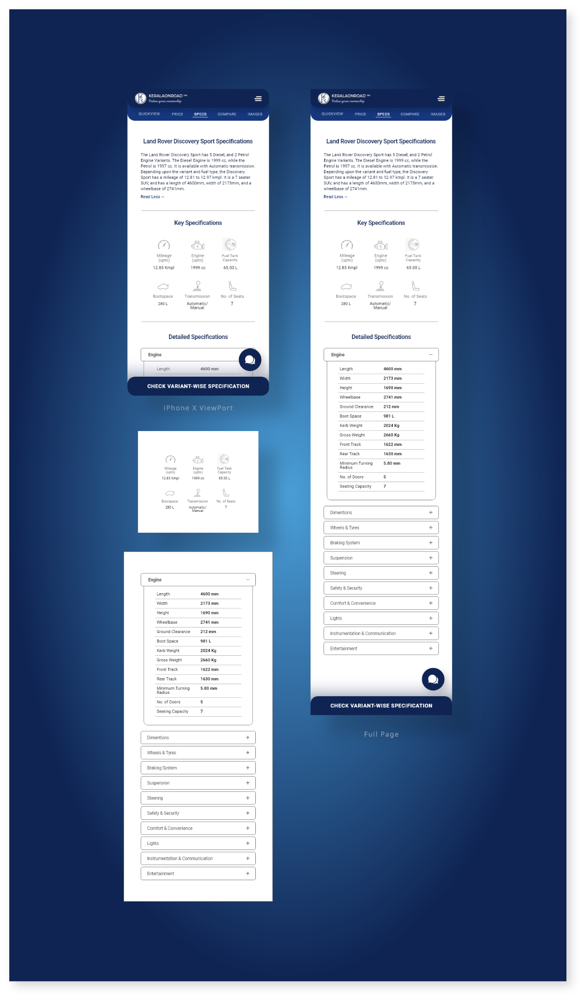
Added all the specification related information in one single page, in a short simplified way.
Used graphical assets in the specification section, to increase the user experience.
Showed the details of the specifications in a drop-down format, thereby utilizing the space.
Created a CTA button for showing the specifications of the vehicle, according to its variants, and thus redirecting to a separate page, and increasing the user engagement.
Dedicated floating chat button, to assist the users, and making the helping process smooth.
Variants Page
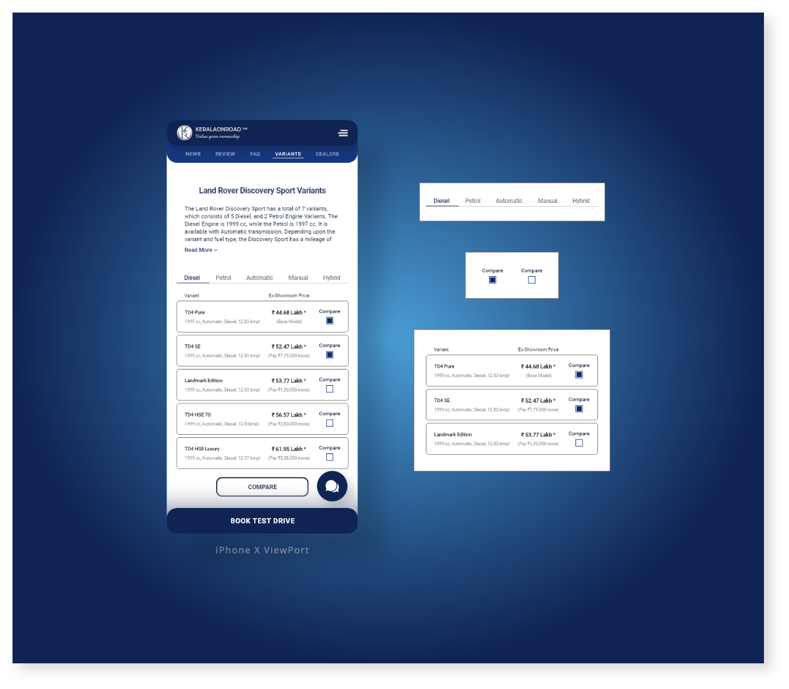
Added all the vehicle variants related information in one
single page, in a short simplified way.
Used tab slider bar, to slide in through the different
variant types.
Added an extra feature to compare between the variants
of a single vehicle.
Used Toggle switch, for the user to select the specific
variants to compare.
Created a CTA button for booking test drive, which
connects the seller with the buyer/user.
Dealers Page
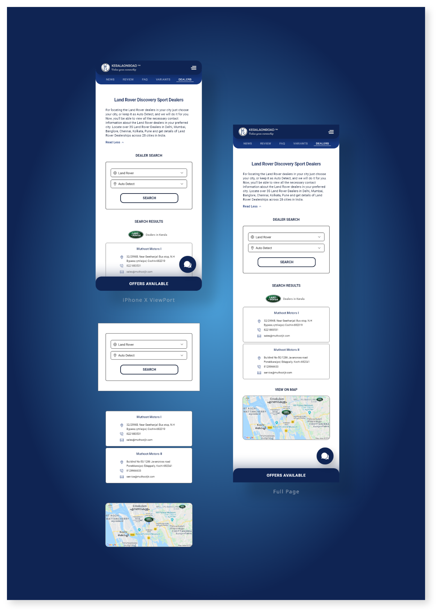
Added all the dealer related information in one
single page, in a short simplified way.
Created a separate 'dealer search' section, where we need to accept the vehicle brand name, and the desired search location from the user, using a drop down suggestion menu.
Showed results in a tabular card format, along with all the important details of the dealers.
Also showed the location from the dealer search results in the map.
Compare Page
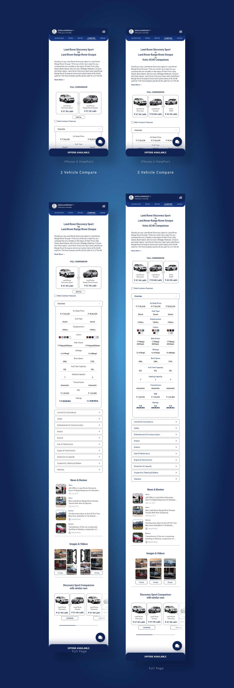
Introduced the feature of comparing 3 vehicles at once.
Added all the vehicle comparing related information in one
single page, in a short simplified way.
Used visuals to show the comparison of the vehicles.
Showcased the specification-difference in a drop-down menu,
thereby making use of the space.
Added the News and Reviews section, related to the vehicles
being compared.
Added the Gallery section, related to the vehicles being
compared.
Provided a separate section, with related vehicle comparison,
in a card format with horizontal scrolling , to save space.
News / Reviews Page
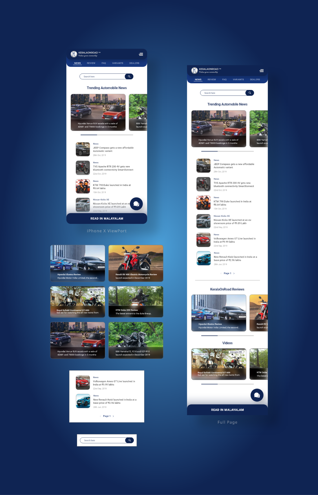
Introduced the search bar to this page.
Added all the news and reviews related information in one
single page, in a short simplified way.
Used visuals to show the news headlines.
Showcased the trending news in a separate section using horizontal slider to save up the space.
Added the Paging system to the vertical news section.
Showcased reviews and related videos, in card format through a horizontal scroll system.
Added a dedicated CTA button to read the whole page in Malayalam (Requested by Team, as it is a Kerala based company)
Result / Achievement
Collaborated with the Back end team to deploy new features.
Decreased Page load time by ~30%
Increased the User engagement by 25%
Completed tasks at an average of 10% before deadline.
Tools / Languages Used
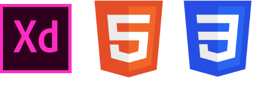

Go back to Projects